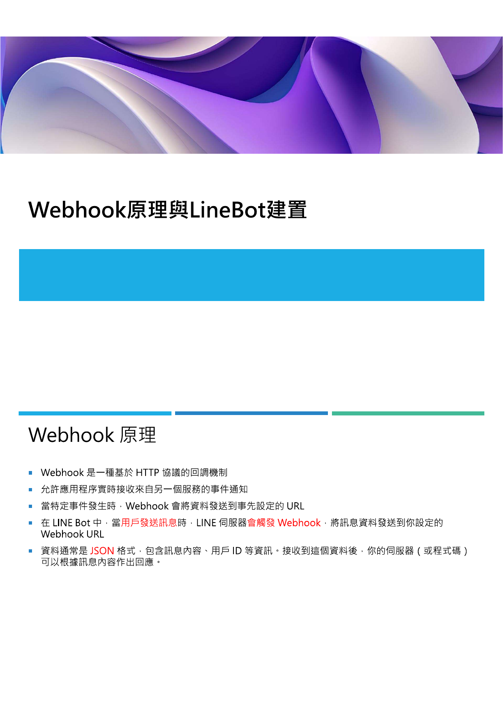

先備條件
- 一個可登入 LINE Developers 的 LINE 帳號。
- 一個可使用 Google Sheets、Drive 與 Apps Script 的 Google 帳號。
- 至少一組 Gemini API Key，若需要發佈到 Threads，還需 Threads 與 Cloudinary 金鑰。
- 明確規劃好資料夾與工作表命名，避免後續維護混亂。
步驟 1：建立 Google Sheet 作為記憶庫

教材將 Google Sheet 視為長期記憶層。至少應建立 APIKEY、日誌、筆記、檔案紀錄與暫存相關分頁。所有金鑰、操作紀錄與部分快取資料都會在這裡管理。
- 命名試算表，例如「LINE 智慧助理資料庫」。
- 建立 APIKEY 分頁，依既定欄位放入 Gemini、LINE、Threads、Cloudinary 等金鑰。
- 建立操作日誌與檔案日誌工作表，支援追蹤使用歷程。
步驟 2：建立 Google Drive 檔案庫

Google Drive 負責保存從 LINE 上傳的圖片、影片、文件，以及 AI 生成的 Google 文件、簡報或網頁報告。請先建立專用資料夾並保留資料夾 ID。
步驟 3：建立 LINE Channel
前往 LINE Developers Console 建立 Messaging API Channel，記錄 Channel secret 與 Channel access token。這兩項是系統接收事件與回傳訊息的入口憑證。
- 建立 Provider 與 Channel。
- 進入 Messaging API 分頁取得 Access Token。
- 確認 Use webhook 後續可以被啟用。
步驟 4：部署 Google Apps Script 網頁應用程式

回到試算表後，從「擴充功能 > Apps Script」建立專案，貼入核心程式，填入試算表 ID、資料夾 ID、API Key 讀取位置與模型設定，最後部署為網頁應用程式。
- 執行身分選擇「我」。
- 存取權限選擇「任何人」。
- 完成授權後複製網頁應用程式網址，這就是 Webhook URL 的基礎。
步驟 5：設定與驗證 Webhook
把部署得到的網址貼到 LINE Developers 的 Webhook URL 欄位，更新後執行 Verify。若驗證成功，表示 LINE 可以把事件送到你的 Apps Script。接著關閉干擾性的 Auto-reply messages，保留 Bot 主控權。
最小成功指標
- Webhook Verify 成功。
- 從 LINE 傳訊後，Apps Script 有收到事件。
- 試算表中出現至少一筆日誌或測試紀錄。